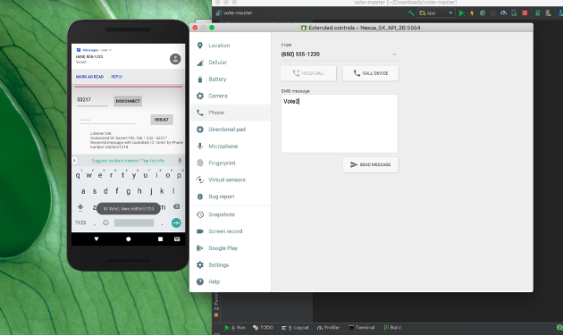
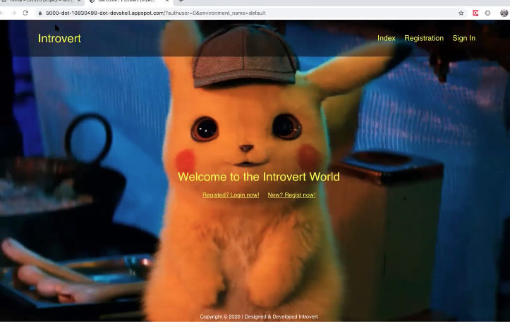

Xingjian Diao
CS Master Student
Biography
Interests
- Database Management
- Natural Language Processing
- Transfer Learning
- Artificial Intelligence
- Machine Learning
- Computational Photography
- Computer Vision
- Algorithms
- Software Development
Education
-
 M.S. in Computer Science, Expected 2022Northwestern University
M.S. in Computer Science, Expected 2022Northwestern University -
B.S. in Computer Science, 2020University of Pittsburgh
Publications
Selected publications
Building a Cloud-based Energy Storage System through Digital Transformation of Distributed Backup Batteries in Mobile Base Stations
Joint work with S. Ci, Y. Zhou, Y. Xu and J. Wang
- Publisher: IEEE, 07 May 2020
Reach On Waste Classification and Identification by Transfer Learning and Lightweight Neural Network
Joint work with X.Xu and X.Qi
- Publisher: Preprints, 23 February 2020
Projects
Selected Projects
Remote Voting System
- Our team developed this product to provide voting service remotely (e.g. cast vote form one device from another. A system will count unique votes from texts sent from smartphone and the phone number will also be recorded to avoid repetitive votes).
- 
Introvert Software Engineering
- Our team created an inclusive communication environment for introverted students using JavaScript, JSON, AJAJ, Python, Flask, SQLAlchemy, and Google Cloud platform. The aim was to promote engagement for introverted people to more easily chat online. I implemented anonymous chatting protocols to mask identity and developed an interface that allows “dm”-ing people of interest.
- 
Employments
Highlights from my most recent employment history.
University of Texas Southwestern Medical Center
(Intern, May-August 2019; May 2020-Current, Taxes, US)
- Enhanced the hospital’s manual data analytics process by building a multi-species database on MySQL and designing a user-friendly application via RStudio
- Synthesized multiple algorithms for the computational analysis of genomics and proteomics data needed for auto-Antibody Profiling Analysis
- Helped create tools to improve the efficiency of data cleaning and analysis, which sped up data processing and successfully met project deadlines
Shandong Jianzhu University
(Student Researcher, June-December 2018, Shandong, China)
- Copyright: (Applied for and received copyright) 2018SR071476 from Copyright Protection Center of China
- Helped develop an Online Drawing Management System based on the B/S structure and Windows Operating system; primarily worked with C# and JavaScript to write over 4,000 lines of code
- Implemented functionalities such as notice announcement, interface, navigation menus, and user and role management as well as the online management system for a large number of drawing documents
- Completed automatic database loading based on the existing document storage structure of drawing documents without manually entering the basic information of existing drawings, reducing user search time
ICreate Training School
(Tutor, July-August 2017, Shandong, China)
- Held classes on the foundations of programming languages and taught a class of kids 5-7 years old class about tools like Scratch
- Prepared teaching materials and presentations for the kids, helping them become more confident in coding
Reading
This is my favorite type of reading
Contact
- xingjiandiao2022@u.northwestern.edu
 412-370-0998
412-370-0998- 1717 Ridge Ave., Apt503, Evanston, IL60201
 View Xingjian's Instagram
View Xingjian's Instagram